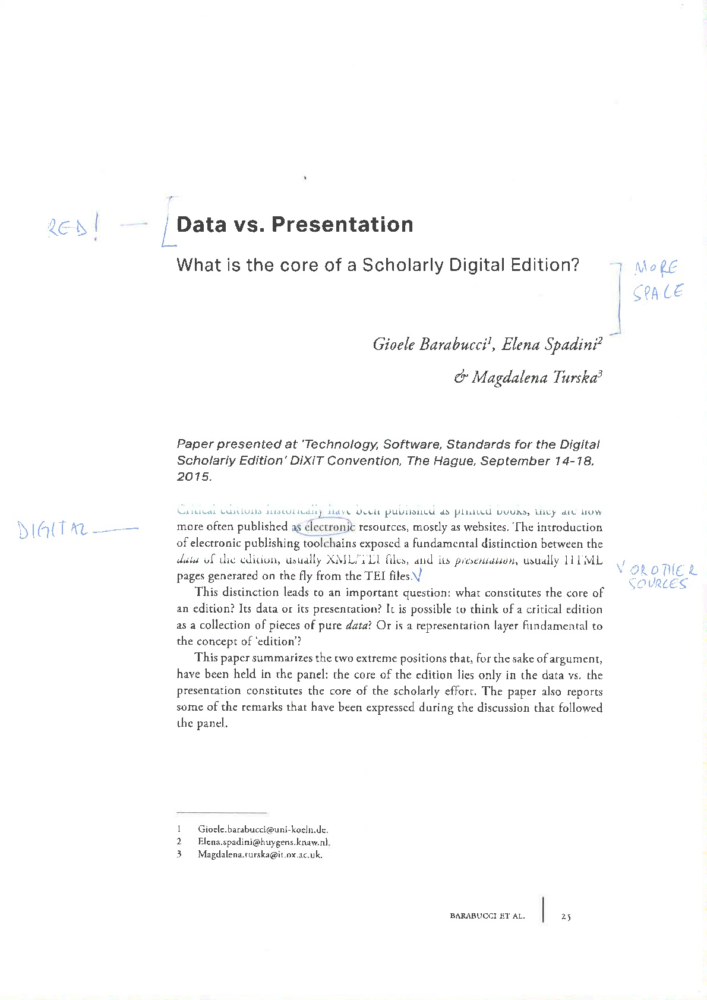
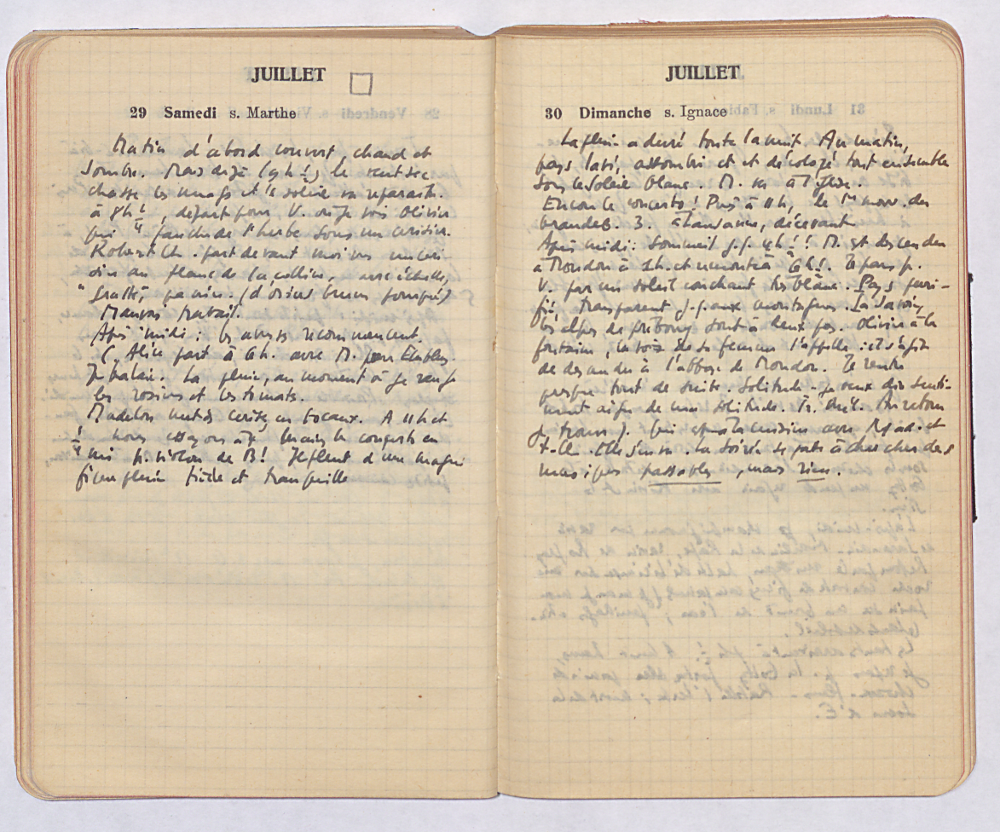

Introduction aux éditions et
aux outils numériques (2).
Génétique textuelle
Le projet « Gustave Roud, Œuvres complètes »
UNIL - Master Histoire du livre et édition des textes, 23.10.2017
" ... la critique génétique instaure un nouveau regard sur la littérature. Son objet: les manuscrits littéraires, en tant qu’ils portent la trace d’une dynamique, celle du texte en devenir. Sa méthode: la mise à nu du corps et du cours de l’écriture, assortie de la construction d’une série d’hypothèses sur les opérations scripturales. Sa visée: la littérature comme un faire, comme activité, comme mouvement. "
(Grésillon 1994, 7).
Lexicon of Scholarly Editing
Plateforme « Variance »
« Les manuscrits de Madame Bovary »
Prèmiere partie (suggestions | codes | explorer la séquence)
« Samuel Beckett Digital Manuscript Project »
Digital + Paper | Beckett Digital Library |
Exemples d'édition
- Leo Jansen, Hans Luijten, Nienke Bakker (eds.) (2009), Vincent van Gogh - The Letters. Version: December 2010. Amsterdam & The Hague: Van Gogh Museum & Huygens ING
- The Shelley-Godwin Archive
Édition numérique
Une édition numérique ne peut pas être convertie dans une édition papier sans une perte substantielle de contenu ou de fonctionnalité


Patrick Sahle, Digitale Editionsformen, Zum Umgang mit der Überlieferung unter den Bedingungen des Medienwandels, 3 Bände, Norderstedt: Books on Demand 2013
A digital edition follows the requirements of a scholarly edition in consideration of the digital paradigm
"Eine digitale Edition ist dadurch bestimmt, dass sie die allgemeinen
Anforderungen an eine wissenschaftliche Edition durch die Berücksichtigung
der gegenwärtigen technischen Möglichkeiten und ihrer methodischen
Implikationen erfüllt. Sie folgt einem «digitalen Paradigma»"
(Sahle 2016/2: 148)
Digital scholarly editions are not just scholarly editions in digital media: digital ≠ digitized
"Wiedergabe ohne Erschließung ist keine Edition. Eine bloße Reproduktion, ein einfaches Faksimile, eine digitale Bibliothek ist keine Edition"
"Deshalb kann eine digitale Edition nicht einfach die digitale Fassung einer auch im Druck realisierbaren Edition sein – zu ihrem Wesen gehört, dass sie über die Beschränkungen der typografischen Edition hinweggeht"
(Sahle 2016/2: 141-142; 149)
A digital edition can not be printed without a loss of information and/or functionality
"Eine digitale Edition ist dadurch bestimmt, dass sie nicht ohne wesentliche Informations- und Funktionsverluste in eine typografi sche Form gebracht werden kann – und in diesem Sinne über die druckbare Edition hinausgeht."
(Sahle 2016/2: 149)
Édition numérique ... ou numérisée?
- Fondation des sources du droit de la Société suisse des juristes, Collection des sources du droit suisse online
2.
Encodage du texte
Encodage du texte
Origine: markup pour la révision d'un texte.
{kind=link}
L'encodage rend explicite (pour une machine) ce qui est implicite (pour une personne).
✽
Markup makes explicit (to a machine) what is implicit (to a person).
Un des standards pour l'encodage des textes,
trés répandu, est celui de la
Text Encoding Initiative
TEI
- Organisme internationale, crée par des chercheurs et chercheuses en 1987
- Consortium, depuis le 2001 : membres, conférences annuelles, comité technique (Technical Council) et comité administratif (Board of directors)
- Le TEI-C produit les TEI Guidelines, c'est à dire des conseils sur comment utiliser plus de 500 balises pour l'encodage des textes.
- Pas seulement pour l'édition des textes (ex. E-Codices)
E-Codices
- Manuscrits de la BCUL
- Lausanne, Bibliothèque Cantonale et Universitaire de Lausanne, M 454: description | source XML-TEI de la description (onglet)
Le journal de Gustave Roud
Résumé
- Éditions numériques
- Numérique ≠ numérisée
- Comment citer
- Encodage du texte (TEI ou autre): information explicite
- TEI: un fichier --> differents visualization
Une édition CRITIQUE doit avoir des principes d'édition (pour l'établissement du texte) clairs et pertinents
peu importe si numérique ou pas !
Elena Spadini